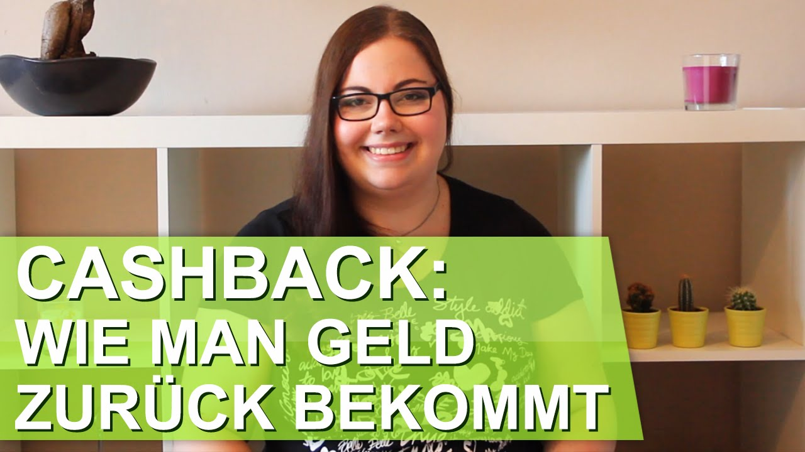

Monopoly Startgeld | Wie viel Startgeld bekommt jeder?
2020.12.09 18:28
Spielanleitungen und Spielregeln
Spielanleitungen und Spielregeln Wir wissen wies gespielt wird!
Menü
Spielregeln Kartenspiele Gesellschaftsspiele Brettspiele Spiele Tests Brettspiele BestsellerMonopoly Startgeld
Du bist hier: Startseite » Monopoly StartgeldDas Monopoly Startgeld aller Editionen
Es ist eigentlich immer die selbe Frage die sich den Monopoly Begeisterten stellt: Wie viel Startgeld bekommt denn jetzt jeder? Zu dieser Frage möchten wir Ihnen die Antwort geben, damit dem Spielgenuss nichts mehr im Wege steht. Das Startgeld hängt von der jeweiligen Monopoly Version ab, deshalb haben wir Ihnen die gängigsten zusammengetragen.
Inhaltsverzeichnis
1 Das Monopoly Startgeld aller Editionen 1.1 Monopoly Classic Startgeld 1.2 Monopoly D-Mark Startgeld 1.3 Monopoly Euro Startgeld 1.4 Monopoly Game of Thrones 1.5 Monopoly World Startgeld 1.6 Monopoly Star Wars Startgeld 1.7 Allgemeine Monopoly Regeln Werbung
Monopoly Classic Startgeld
In Summe bekommt hier jeder Spieler 1500 Monopoly Dollar. Die Geldverteilung im Monopoly Classic Spiel setzt sich wie folgt zusammen:
Anzahl Geldnote 5 1 M$ 1 5 M$ 2 10 M$ 1 20 M$ 1 50 M$ 4 100 M$ 2 500 M$ Werbung
Monopoly D-Mark Startgeld
Habt ihr noch eine alte Version von Monopoly mit D-Mark als Spielwährung, so setzen sich die 30.000 DM Startgeld der Spieler folgendermaßen zusammen
Anzahl Geldnote 5 20 DM 5 100 DM 1 400 DM 1 1.000 DM 4 2.000 DM 2 10.000 DM
Monopoly Euro Startgeld
Habt ihr schon eine neuere Version von Monopoly mit Euro-Scheinen als Spielwährung, so setzen sich die 15.000 Euro Startgeld der Spieler wie folgt zusammen:
Anzahl Geldnote 5 10 Euro 5 50 Euro 1 200 Euro 1 500 Euro 4 1.000Â Euro 2 5.000Â Euro Werbung
Monopoly Game of Thrones
Die neue Sonderedition Monopoly Game of Thrones wird zunehmend beliebter. Doch auch hier stellt sich die Frage: Wie viel Startkapital bekommt jeder? Hier finden Sie kurz und prägnant die Zusammensetzung der insgesamt 1500 Gold die jeder Spieler erhält:
Anzahl Gold 5 1 1 5 2 10 1 20 1 50 4 100 2 500
Monopoly World Startgeld
Sie haben die Sonderedition Monopoly World, aber wissen nicht wie viel jeder an Startgeld bekommt? Jeder Spieler erhält insgesamt 1500 Mark durch diese Zusammensetzung:
Anzahl Geldnote 5 20 Mark 4 100 Mark 2 500 Mark
Monopoly Star Wars Startgeld
Auch in dieser Spielvariante erhalten alle Spieler zu Beginn 1500 Credits. Da in dieser Edition jedoch andere Scheine verwendet werden, ändert sich die Geldverteilung minimal von den vorherigen Spielvarianten:
Anzahl Geldnote 5 10 Credits 5 20Â Credits 1 50Â Credits 1 100Â Credits 4 500Â Credits
Allgemeine Monopoly Regeln
Ihr habt Fragen zu den allgemeinen Monopoly Regeln? Auch diese haben wir für euch einfach und übersichtlich aufbereitet.
Zu den allgemeinen Monopoly Regeln
Die Spiele des Jahres 2018!
Keine Produkte für "360472031" gefunden.
Werbung Copyright © 2020 Spielanleitungen und Spielregeln . Bereitgestellt von WordPress . Theme: Spacious von ThemeGrill . Impressum Datenschutzerklärung Informationen über CookiesDurch die weitere Nutzung der Seite stimmst du der Verwendung von Cookies zu. Weitere Informationen Akzeptieren
Die Cookie-Einstellungen auf dieser Website sind auf "Cookies zulassen" eingestellt, um das beste Surferlebnis zu ermöglichen. Wenn du diese Website ohne Änderung der Cookie-Einstellungen verwendest oder auf "Akzeptieren" klickst, erklärst du sich damit einverstanden.
Schließen
